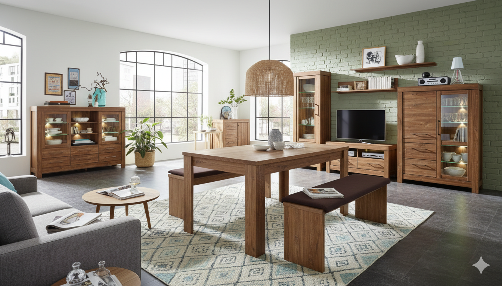

Dzięcioł - twój sklep z meblami
Dlaczego nasz sklep?
Dzięcioł to kameralny, ale nowoczesny sklep-pracownia, specjalizujący się w wysokiej jakości meblach z litego drewna, tworzonych z poszanowaniem tradycyjnych technik rzemieślniczych. Nasza oferta skierowana jest do osób ceniących trwałość, naturalne materiały, unikalne wzornictwo oraz ekologiczny styl życia. Wierzymy, że mebel to inwestycja na lata, która z czasem nabiera charakteru, stając się częścią domowej historii.
Właściwości naszych mebli
- Wysoka jakość
- Trwałość i ponadczasowość
- Zrobione z drzew najwyższej jakości
- Naturalne wykończenie
Nasze credo
" Dzięcioł. Ręcznie robione. Z miłości do drewna. "
Kontakt
| Adres | Rynek Piastowski 28, 97-340 Rozprza |
|---|---|
| dzienciol@sklep.pl | |
| Tel. | +48 200 700 100 |